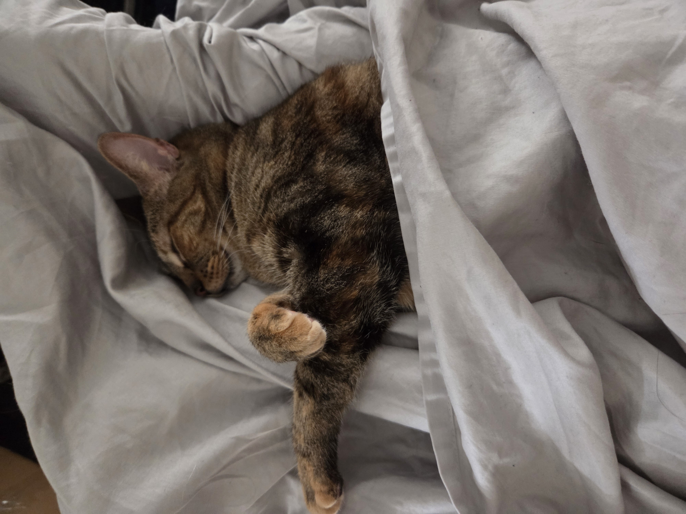
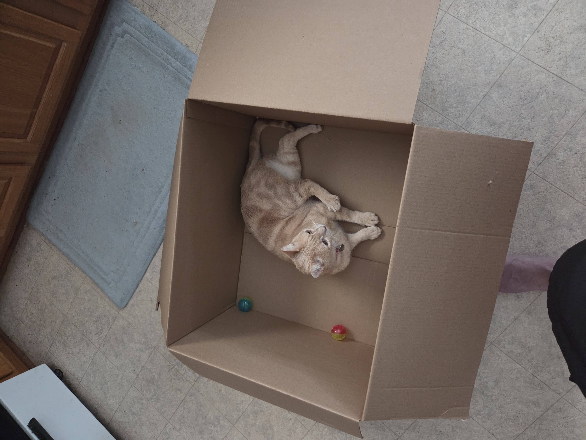
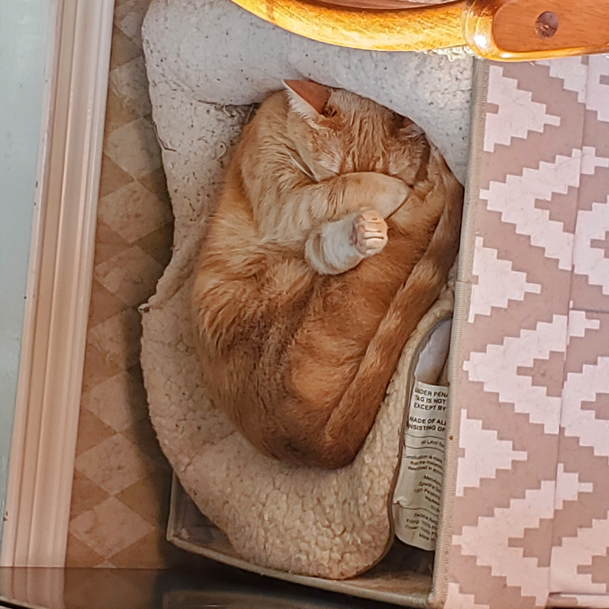
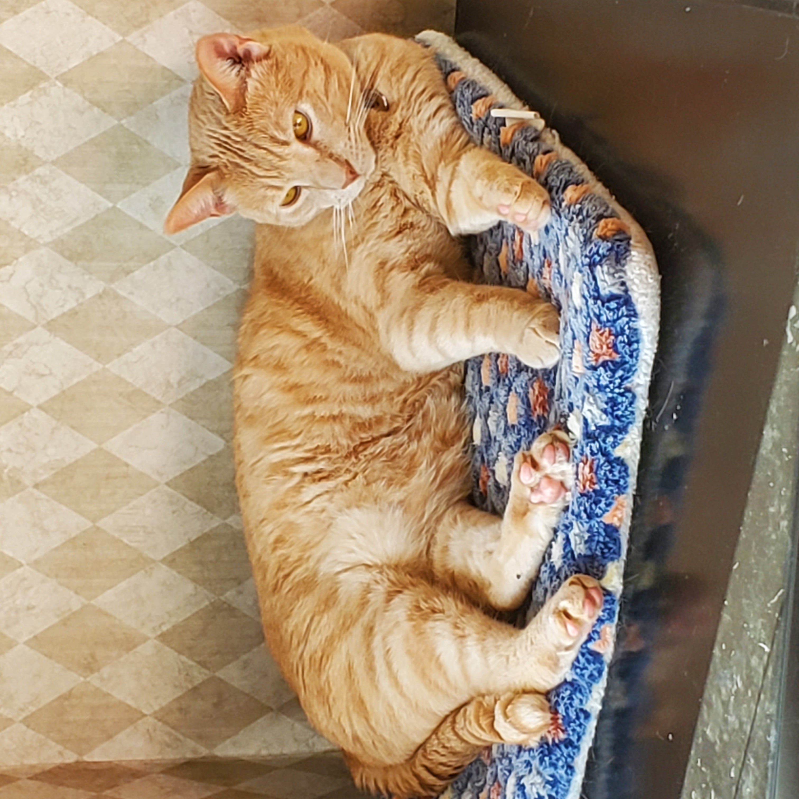
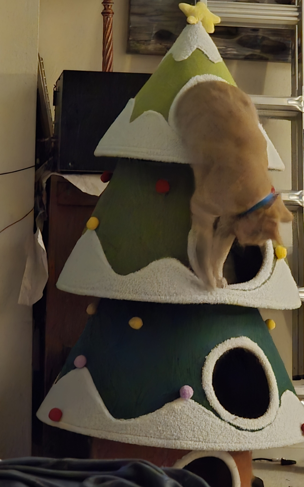
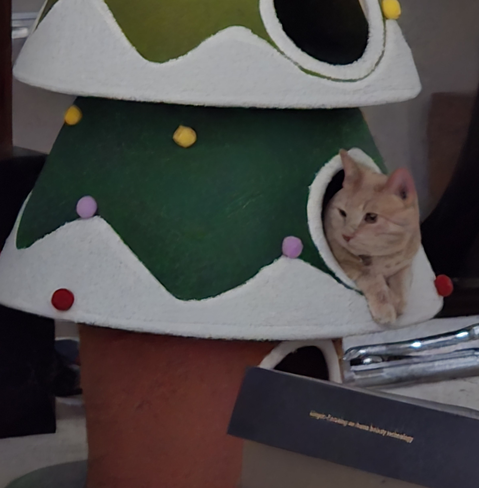
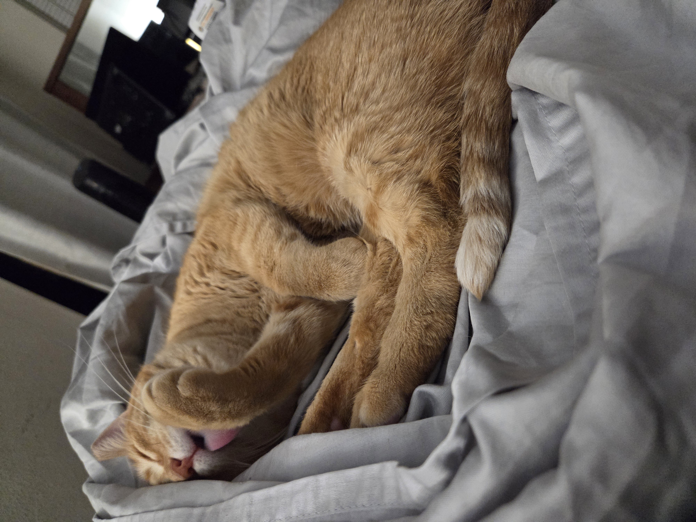

Snoreful
Snoreful is the undisputed queen of our household who has graciously allowed us to remain in 'her' house. She likes meeting new humans and is food-motivated. She eats her wet food at a surprising speed and will eat all three of her brothers' portions if given the chance. Snoreful likes to alert me when it is time for wet food by sitting in front of my keyboard, slowly raising her paw, and booping my glasses. She will run on our giant cat wheel, but only if there's a human nearby to give her praise for doing so.

Tanner
Tanner is a friendly troublemaker. He is the only one of our cats who enjoys being held like a baby, although he doesn't like me walking around while doing so. He is the slowest eater of the bunch and has to have his wet food defended from Snoreful. His favorite place to sleep is under my arm. He loves toys that crinkle or that roll across the floor. Despite being our oldest cat, he is the most playful. He likes to notify me when it is wet food time by slowly pushing things off my desk. The rest of the day, Tanner likes sitting on a chair next to me at my desk, or crawling between me and the back of my chair to force me to use good posture.


George
George is a good boy, a scaredy cat, and Snoreful's favorite. He loves my wife the most and will wait by the front door for her to come home from work. We often find him cuddling with Tanner even though Tanner will pick a fight with George whenever he is bored. His legal name is George, but we tend to call him Georgie. He is the only one of our cats who will wait patiently for us to feed him wet food, possibly because he prefers kibble.



Gingerbread
Gingerbread is the newest addition to our fluffy family and the youngest member of our household; being only 2 years old, he's the lone young adult in a house full of almost-senior cats. Our other three cats were roommates at the shelter and have been friends since being adopted. Gingerbread, however, was scared of his roommates at the shelter and wouldn't eat or leave his litter box. When he quickly grew accustomed to us, we knew we had to adopt him and give him a place where he felt safe. He has been slow to befriend our other cats, but he now gets along with everyone except for George. His favorite thing to do is to (attempt to) clean my beard while I'm trying to sleep. His nicknames include "Sir Licks-A-Lot" and "Mr. LickyLicky".
